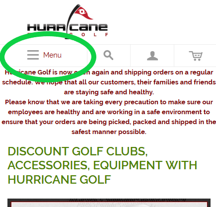

Similar to last week, we will be discussing the results of user testing of hurricanegolf.com, an online discount golf supply business, except we will accessing the site from mobile devices and evaluating the mobile version of the site. The devices range from 360px width smart phones to iPads (768 pixels width in portrait mode)
The script used for these user tests can be found here, which has been modified slightly to account for the lack of functionality of the mobile version of the site
To review, the tasks we'll be asking the testers to perform are
- Home Page impressions: specifically what is the user able to determine about the business from the home page
- To learn about the company's return policy, asked to assess a specific type of return
- To learn how to track an order
- To find a specific product
This week, the users have a mix of experience with golf, some have not played before but when asked to self-assess, stated they felt comfortable with the terminology. All three test subjects are regular online shoppers. All are regular computer users both at work and at home and all use laptops, tablets and smartphones regularly.
Task 1: Home Page Assessment
Upon viewing the home page, users were able to determine that this business sells golf equipment online, and associated it with being a "discount" seller. These results are mostly similar to last week, with the mobile version of the site distilling down the content to just golf products. On the desktop version, users also correctly identified this however listed several other products as part of the core business as well.
Hurricanegolf.com's home page mobile version
As with last week, user testing suggests that the mobile version of the site correctly communicates the mission of hurricanegolf.com.
Task 2: Return Policy
Users were asked to use the website to determine if a fictitious order from hurricanegolf.com could be returned given the conditions. This information is located in the footer of the home page, pictured below:
On the desktop version, that information can be found by clicking the link in the footer of the home page, pictured here

Unfortunately, the mobile version of the site removes this menu and these links, making the information not accessible. No user was able to locate it, nor was the test facilitator. One user decided the best way to achieve this would be selecting "live help" in the mobile footer.

Return policies are often useful information for online retail consumers, especially since buyers cannot sample the product in advance. An improvement to the usability would be to provide a button allowing the user to access the desktop version of the site from their mobile device. A second option would simply be to include this informatoin on the mobile version of the site.
Task 3: Track an order
For this task, users were asked to learn how to track an order. On the desktop version, this information is again located in the footer, similar to return policy. And much like returns, shipping and tracking information is not available in the mobile version of the site's footer.
One user used the search function and was unsuccessful. It was proven that the website does have information related to tracking avialable on the desktop version. It is therefore interesting that the search function did not return results.
All users determined that the site did not have this functionality. Much like the return policy task, an improvement that could be made would be to allow users to access the desktop version of the site from their devices, or to include shipping/tracking info on the mobile version.
Task 4: Shop for specific product
Users were asked to locate all left handed irons for sale, which would require navigating to the "irons" page and filtering for left handed products only. For reference, irons are located under the "golf clubs" menu on the home page, pictured below:
All users were able to successfully locate left handed irons. Unlike the desktop version where users did not immediately recognise the top level menu bar, the prominent hamburger-style collapsible menu on the mobile version on the home page was discovered quickly.
Interestingly enough, on the desktop version a consistent finding was that after users found the "irons" page but before they successfully filtered for "left handed", all users interacted with a "sort-by" drop-down menu where the first text option was "position". Once again, this drop -down menu attracted mobile users before they later filtered for left handed products. The sort-by drop-down menu is a unanimous finding across 6 different users!
Summarizing, the hamburger collapsible navigation icon attracted mobile users and directed them down the correct path, however all mobile users and desktop users attempted to use an unrelated drop-down menu prior to filtering. A design improvement would be to choose a word other than position as the first "sort by" choice to appear in the drop down, which I believe is too closely related to "handedness".
Summary
Hurricanegolf.com's mobile site lacks some key functionality compared to its desktop version. The site could be improved in the following ways:
- Add return policy and tracking links to the mobile footer
- Choose a word other than "position" as the default text in the "sort by" drop-down menus on product pages
Return policy or any information related to returns is a critical piece of information that users need when making online purchases and gives confidence to the buyer. However generally speaking users successfully navigated the mobile site.